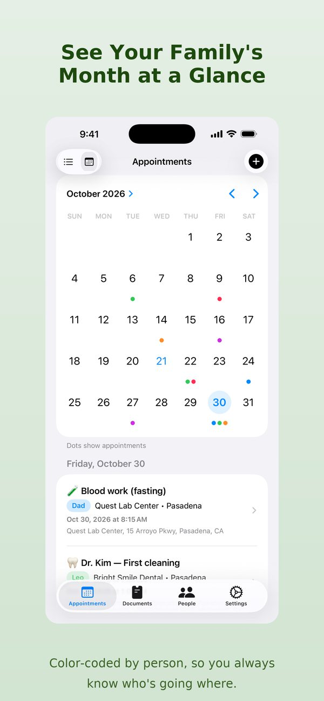
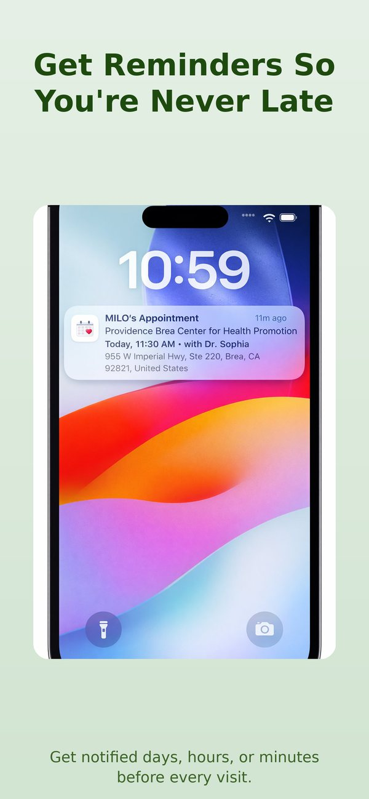
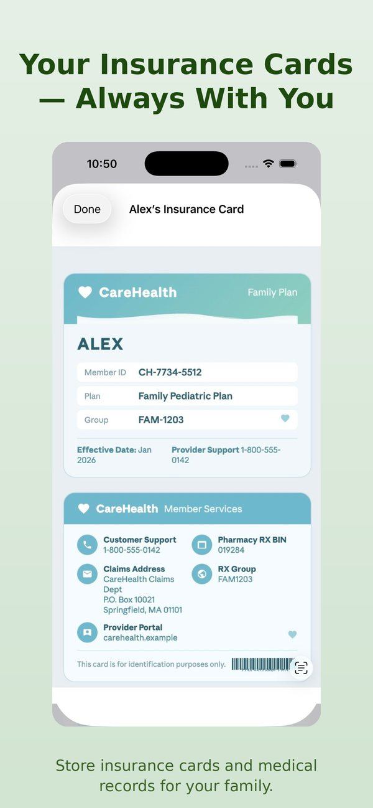

Una cita médica, cinco apps. Por qué creé CareDay Family
Read in English- Calendario
- Recordatorios
- Mapas
- Cartera
- Notas
Piensa en todo lo que implica una sola cita con el doctor. La fecha va en tu calendario. Pones un recordatorio para no olvidarla. Ese día, abres una app de mapas para encontrar el consultorio. En la recepción, buscas la tarjeta del seguro en tu cartera o entre las fotos del celular. ¿Y las preguntas que querías hacerle al doctor? Están en alguna app de notas, o en ningún lado.
Son cinco apps para una sola cita. Ahora multiplícalo por todas las personas que cuidas: tus hijos, tu mamá o tu papá, tu pareja y tú.
Cada una de esas apps hace bien su trabajo. Pero ninguna las juntaba alrededor de la cita. Por eso creé CareDay Family: una sola app que hace las cinco cosas, para cada cita y para toda la familia.
Esperaste semanas por esta cita
Esto importa porque conseguir una cita médica toma mucho tiempo. En Estados Unidos, la espera promedio para ver a un médico en las ciudades grandes ya es de 31 días, un 19% más que en 2022.1 En Canadá, después de que tu médico de cabecera te refiere, la espera media solo para ver al especialista es de 15.3 semanas, casi cuatro meses.2
Después de esperar tanto, sería una lástima llegar tarde, sin la tarjeta del seguro o sin acordarte de la pregunta que más necesitabas hacer. Y si faltas, muchas veces vuelves al final de la fila.
Así se ve llegar preparado
Quería que CareDay te acompañara en cada cita, desde el día que la agendas hasta que te sientas con el doctor. Así se ve con los recordatorios que vienen por defecto.
-
Una semana antesLeo: dentista en 1 semanaLunes 16 de nov., 1:00 p. m. Es momento de avisar en el trabajo y en la escuela.
-
El día anteriorLeo: dentista mañana1:00 p. m. en Bright Smile Dental
-
Una hora antesLeo: dentista en 1 horaDesliza la cita para ver cómo llegar en Apple Maps o Google Maps.
-
En la sala de esperaLa tarjeta del seguro y tus preguntas, en un solo lugarLas fotos de la tarjeta en Documentos y tus preguntas en las notas de la cita.
1. Un calendario para toda la familia
Todas las citas viven en una lista y en un calendario mensual, con un color para cada persona. El doctor, el dentista, el terapeuta, el oculista, hasta el veterinario. Con un vistazo sabes quién tiene qué y cuándo.

2. Recordatorios con tiempo para prepararte
La mayoría de los recordatorios llegan cuando ya es tarde para hacer algo. En CareDay, por defecto te avisa una semana, un día y una hora antes. El de una semana es el que más me importa: te da tiempo para pedir la tarde libre en el trabajo, avisar en la escuela que tu hijo va a faltar o conseguir quién te lleve.

3. Cómo llegar al consultorio
La dirección queda guardada con la cita, así que nunca tienes que volver a buscarla. Desliza la cita, elige Apple Maps o Google Maps, y listo.
4. Una cartera para tus documentos
Cuando llegas, todo lo que te piden en la recepción está en un solo lugar: las tarjetas del seguro por ambos lados, referencias, cartillas de vacunación, resultados de laboratorio. Están en tu celular, organizados por persona, y puedes protegerlos con Face ID.
¿Necesitas mandarle una referencia al especialista o la cartilla de vacunación a la escuela de tu hijo? Envía cualquier documento por correo, Mensajes o AirDrop con un solo toque, con un nombre claro como "Leo – Insurance Card", para que quien lo reciba sepa exactamente qué es.

5. Notas para tus preguntas
Las citas son cortas, y es fácil olvidar lo que querías preguntar una vez que estás frente al doctor. Cada cita en CareDay tiene una sección de notas. Apunta tus preguntas conforme se te ocurran en las semanas anteriores ("¿Es normal este sarpullido?", "¿Deberíamos cambiar la dosis?") y ábrelas cuando el doctor te pregunte si tienes alguna duda.
Para ti o para quien cuidas
Ya sea tu cita, la de tu hijo, la de tu mamá o la del perro, funciona igual. Recibes el recordatorio a tiempo para organizarte, la ruta el día de la cita, y tus documentos y preguntas en la mano cuando entras. Todo listo.
Por eso creé CareDay Family. La espera por una cita ya es bastante larga. Llegar preparado no debería ser lo difícil.
Una nota personal
Yo también soy hispano. Sé lo que es ser quien lleva las citas de todos: traducir en el consultorio, acordarse de la cita de la abuela, cuidar que nadie se quede sin su chequeo. CareDay es una app pequeña e independiente, y la hice yo. Si te sirve, me ayudarías muchísimo descargándola, dejándole una reseña en el App Store o compartiéndola con alguien de tu familia.

¿Quieres CareDay en español?
Por ahora la app está solo en inglés. Si hay suficiente interés, la traduzco al español. Toca el botón para decirme que te gustaría.
Sí, la quiero en español